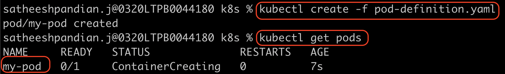
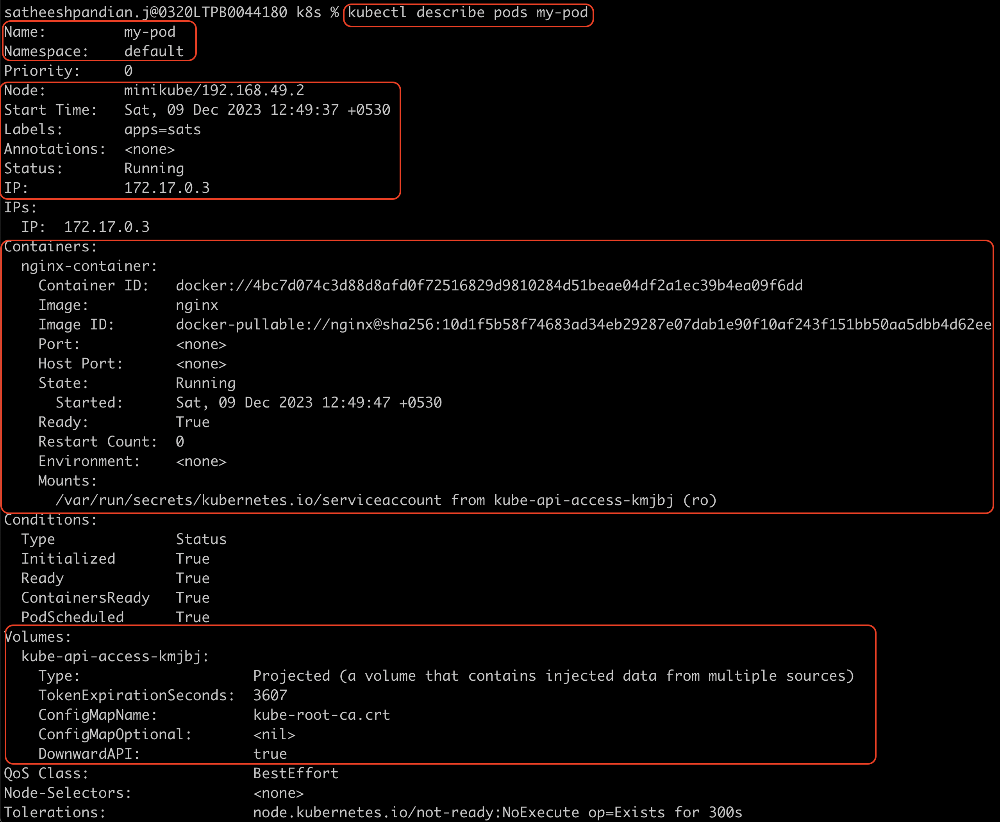
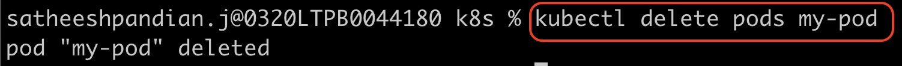
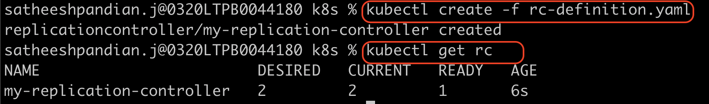
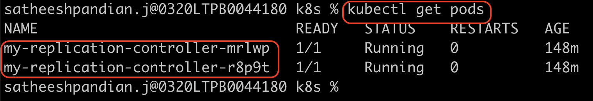
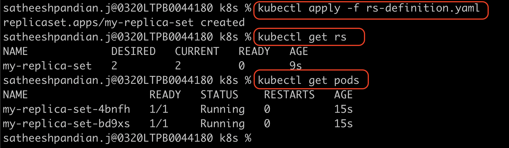
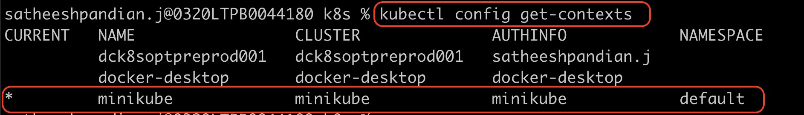
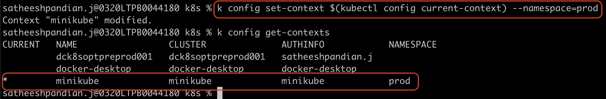

Basics of K8s
Pods
Our goal is to deploy the application container in the worker nodes available k8s clusters and make sure it is up and running all the time. But, k8s doesn't deploy containers directly in the worker nodes. Instead, k8s wrapped the container by a k8s object known as pods.
Pod is the single instance of an application, and it is the smallest unit in k8s.
{kind=link}
If the load is increasing in the application, and you want to scale the containers. In this case, you need to create a pod. You should NOT create a container in the existing pod.
{kind=link}
In case of too many calls to the application and current node doesn't have sufficient resources to support the load, then we can create a new node in the k8s cluster and create a pod to run the application in the new node.
{kind=link}
Remember,
pod should be one to one mapping with container. When you scale up, you need to create a pod, not a container.
When you scale down, you delete a pod which interns delete the container.
Does a pod not have many containers?
The answer is NO. Pod can have multiple containers, but not the same kind. For example, a pod can have different containers like nginx container, redis container, postgres container. But a pod can not have the same type of containers like two nginx containers.
Multi container pods
If the pod has more than one container, then it is known as multi container pod.
The containers within the pod can communicate each other through localhost as both containers are in the same network.
{kind=link}
To create a pod
Example When you run the above command, pod is created first and then pull the image from repository and run it as a container.Remember,
When pod is running, external user cannot connect the application as there was no network connection established.
You can only connect the pod within the node in k8s cluster using `localhost`.
How to create a pod using YAML in k8s?
Below are the mandatory top level/root level properties in any of k8s object such as pod, replicaset, deployment etc.,
apiVersion & kind:
| Kind | apiVersion |
|---|---|
| Pod | v1 |
| Service | v1 |
| Replication Controller | v1 |
| ReplicaSet | apps/v1 |
| ReplicaSet | apps/v1 |
| Deployment | apps/v1 |
| Namespace | v1 |
metadata This is where we need to define the pod properties such as name, labels etc., Pod should have a name which is a mandatory field. You can identify the pod based on this field only. labels are list of dictionary which is optional field.
spec This is where we need to define the container related properties such as name, image which is going to be used, how many containers need to be run etc.,
Pod definition file should have below
apiVersion: v1 -----------------> Based on k8s object, you can update this
kind: Pod ----------------------> k8s object
metadata: ----------------------> Pod properties need to be updated under this
name: my-pod ---------------> Pod name (mandatory)
labels: --------------------> used to group pods (optional)
apps: sats
spec: -------------------------> container properties need to be updated under these
containers:
- image: nginx -----------> container image
name: nginx-container --> container name
If it is multi container pod, then the spec needs to be updated.
spec: -------------------------> container properties need to be updated under this
containers:
- image: nginx -----------> first container image
name: nginx-container --> first container name
- image: redis -----------> second container image
name: redis-container --> second container name
{kind=link}
To create a pod
{kind=link}
To view the list of pods created
The READY column in the output of the kubectl get pods command
To check the pod related details (pod starting time, which node it is running, what are the containers are running inside pods, what are events associated with this pod etc.) {kind=link}
To delete the pod
{kind=link}
If the container is up and running, and you want to make some changes, then you need to use the below command
Please note that only the properties listed below are editable. spec.containers[].image spec.initContainers[].image spec.activeDeadlineSeconds spec. tolerations spec.terminationGracePeriodSecondsTo create the pod definition YAML file using imperative command
If you are not given a pod definition file, you may extract the definition to a file for the pod which is running now using the below command:ReplicaSets
Assume that our application is not running because the pod is crashing. So, our end users cannot access your application. To avoid such scenario, we need to run our application more than one pod. So, even one pod is failed, other pods can support the users and make sure the application is highly available. Replication controller will help us to run the multiple instances of a single pod in k8s cluster. This will ensure the high availability.
{kind=link}
Even if you run your application with only one pod, replication controller will make sure your application always run even your current pod crashes for some reason. RC will create a new pod automatically when the existing pod crashes. Basically, RC will run the number of pods specified in the replicas in RC definition file. Also, RC helps load balancing and scaling.
{kind=link}
apiVersion: v1 -----------------> Based on k8s object, you can update this
kind: ReplicationController ----------------------> k8s object
metadata: ----------------------> RC properties need to be updated under this
name: my-pod ---------------> RC name (mandatory)
labels: --------------------> used to group RCs (optional)
apps: sats
spec: -------------------------> RC properties need to be updated under this
template: ------------------> Under this, pod details need to be updated
metadata:
name: my-pod
labels:
name: my-pod-label
spec: -------------------------> Pods specification which can be created
containers:
- image: nginx -----------> container image
name: nginx-container --> container name
replicas: 4 ----------------> Number of pods to be created

To create an RC and view the list of RC created
 When you create replica controller, the pod name is also start with replication controller name specified in YAML file, but NOT with pod name specified in YAML file. {kind=link}
{kind=link}
Replica set and replica controller purposes are same. The only difference is selector field. For RS, it is mandatory field
and for RC, it is optional.
apiVersion: v1 -----------------> Based on k8s object, you can update this
kind: ReplicaSet ----------------------> k8s object
metadata: ----------------------> RC properties need to be updated under this
name: my-pod ---------------> RC name (mandatory)
labels: --------------------> used to group RCs (optional)
apps: sats
spec: -------------------------> RC properties need to be updated under this
template: ------------------> Under this, pod details need to be updated
metadata:
name: my-pod
labels:
name: my-pod-label
spec: -------------------------> Pods specification which can be created
containers:
- image: nginx -----------> container image
name: nginx-container --> container name
replicas: 4 ----------------> Number of pods to be created
selectors: -----------------> To group the pods and monitor
matchLabels: -----------> To select the pod using label
name: my-pod-label ---> same label mentioned as pod label
{kind=link}
To create an RS and view the list of RS created
 When you create replica set, the pod name is also start with replication set name specified in YAML file (mentioned as "my-replica-set"), but NOT with pod name specified in YAML file (mentioned as "nginx").{kind=link}
Assume that, there are already 3 pods already running and their label is "apps:sats". Now, you are trying to create RS and this RS spec has matchLabels field is "apps:sats" and replica is "3". In that case, RS won't create any new pods because there are 3 pods with same labels are already running. In case, if any one of the pod is failed due to some reason, then RS will create a new pod and make sure the pod replicas are maintained.
{kind=link}
In the above snapshot, pod is already running for 55s and then RS with replica "1" is created. But RS is not created any pods (Age is 11s for RS).
Scale
To scale the pods, we can use any of the below commands
kubectl replace -f <RS definition YAML file> => Before running the command, you need to update replicas field manually in YAML file
kubectl scale --replicas=6 -f <RS definition YAML file> => This will scale the pods, but NOT update in the YAML file
kubectl scale --replicas=6 replicaset <replicaset name>
kubectl edit replicaset <replicaset name> => manually edit and save
Deployments
Assume that there are 10 pods running in k8s cluster with v1 version of image. You want to update the v2 version of image now. So, you need to down 1 pod at a time and replace it with new pod (v2 version). This process applicable until all the existing pods are replaced. This is called rolling updates.
Using deployment, we can do rolling updates, rollback, pause and resume after the changes in k8s cluster.
apiVersion: apps/v1 ------------> Based on k8s object, you can update this
kind: Deployment ---------------> k8s object
metadata: ----------------------> RC properties need to be updated under this
name: my-pod ---------------> RC name (mandatory)
labels: --------------------> used to group RCs (optional)
apps: sats
spec: -------------------------> RC properties need to be updated under this
template: ------------------> Under this, pod details need to be updated
metadata:
name: my-pod
labels:
name: my-pod-label
spec: -------------------------> Pods specification which can be created
containers:
- image: nginx -----------> container image
name: nginx-container --> container name
replicas: 4 ----------------> Number of pods to be created
selectors: -----------------> To group the pods and monitor
matchLabels: -----------> To select the pod using label
name: my-pod-label ---> same label mentioned as pod label
To create a deployment and view the list of deployment created
kubectl create -f <deployment definition YAML file>
kubectl create deployment <deployment name> --image=<image name> --replicas=<number of pods> --dry-run=client -o yaml > <dployement YAML file>
kubectl get deployment
Deployment creates replicaset and pods by default along with deployment.
{kind=link}
{kind=link}
Namespace
We are creating k8s objects such as pods, deployments, RC, RS and services inside the namespace. There are three namespaces created automatically by k8s.
default namespace is created automatically by k8s when the cluster is set up.
K8s created a set of pods and services for internal use such as networking, DNS resolution etc., are put into another namespace
known as kube-system. This namespace is not accessible to the user.
kube-public namespace is allowed to access by users.
You can create your own namespace in the same cluster and create pods, services for each namespace. So, we can avoid using/modifying pods, services in another namespace. Each namespace have its own policy that define the role who can do what. Also, we can assign quota for each namespace. This way we can ensure that each namespace uses only allowed limit and will not impact other namespace.
Resources in the namespace refers each other using their name. For example, assume that there are two different services are in the default namespace named as db-service and web-service. If web-service pod wants to talk/call to db-service pod, then it simply calls db-service.
Resources in one namespace wants to make a call to the resources in another namespace, then it should follow the below pattern
<service name>.<namespace>.<subdomain>.<domain> --> domain is always cluster.local
Remember, when the service is created, DNS is automatically created in this format.
For example, assume that there are two different namespaces (dev, prod) and db-service in the dev namespace and web-service in the prod namespace. If web-service pod wants to talk/call to db-service pod, then it needs to follow the patter
db-service.dev.svc.cluster.local
By default, kubectl command retrieves the data for default namespace. If you want to view the details for another namespace
To create pod in another namespace
kubectl create -f pod-definition.yaml --namespace=<namepace name>
or
kubectl create -f pod-definition.yaml -n=<namespace name>
If you want to create resources to any other namespace other than default namespace , you need to update below details in the definition file.
{kind=link}
In the above case, we don't need to pass --namespace in the command
{kind=link}
To create namespace, there are two ways.
{kind=link}
To view the current namespace
{kind=link}
To view all namespaces
{kind=link}
To change the namespace permanently
{kind=link}
To create a resource quota for namespace, we need to create a resource quota definition file.
{kind=link}
{kind=link}
{kind=link}